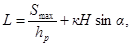

МИНИСТЕРСТВО АВТОМОБИЛЬНЫХ ДОРОГ КАЗАХСКОЙ ССР
УКАЗАНИЯ
ПО ЗАЩИТЕ АВТОМОБИЛЬНЫХ ДОРОГ ОТ СНЕЖНЫХ
ЗАНОСОВ ЛЕСНЫМИ ПОЛОСАМИ В ЗАПАДНОМ КАЗАХСТАНЕ
ВСН 12-72
Министерства автомобильных
дорог Казахской ССР
Алма-Ата
В основу настоящих Указаний положено обобщение исследований и литературных данных по изучению характера роста древесных и кустарниковых пород и агротехнике их выращивания в разнообразных почвенных условиях Западного Казахстана.
Указания разработаны старшим научным сотрудником Казахского филиала СоюздорНИИ, кандидатом сельскохозяйственных наук В.Т. Федюшиным и утверждены приказом Министерства автомобильных дорог Казахской ССР № 303 от 17 сентября 1970 г.
Указания являются официальным документом и должны оказать помощь инженерно-техническим работникам, занимающимся проектированием и выращиванием снегозащитных насаждений вдоль автомобильных дорог различной степени заносимости.
|
Министерство автомобильных дорог Казахской ССР (Минавтодор Казахской ССР) |
Ведомственные строительные нормы |
ВСН 12-72 Минавтодор Каз. ССР |
|
Указания по защите автомобильных дорог Западного Казахстана от снежных заносов лесными полосами |
|
Казахским филиалом СоюздорНИИ |
Утверждены Министерством автомобильных дорог Казахской ССР от 17 сентября 1970 г. |
Срок введения 1 апреля 1972 года |
Озеленение автомобильных дорог является самым экономичным средством в борьбе со снежными и пыльными заносами и при эстетическом оформлении придорожной полосы.
Тяжелые почвенно-климатические условия Западного Казахстана вызывают значительные трудности в создании озеленительных насаждений и требуют осуществления комплекса агротехнических мероприятий применительно к разнообразным почвенно-климатическим условиям. С этой целью в Указаниях даются рекомендации по дифференцированной системе агротехнических мероприятий и перспективному ассортименту древесных и кустарниковых пород применительно к разнообразным условиям данной территории, и рекомендуются сорта плодовых пород и эффективные конструкции снегозащитных и их рациональное расположение вдоль дорог.
Указания должны оказать помощь инженерно-техническим работникам, занимающимся проектированием и выращиванием насаждений вдоль автомобильных дорог Западного Казахстана.
2.1. Продолжающееся освоение природных ресурсов Западного Казахстана вызывает дальнейшее развитие дорожного строительства, неотъемлемой частью которого является озеленение дорог, необходимое для защиты их от снежных и пыльных заносов и эстетического оформления.
Природные условия Западного Казахстана, включающего в себя территории Актюбинской, Уральской и Гурьевской областей, представлены сухостепной, пустынно-степной и пустынной зонами, характерными особенностями которых являются резко выраженная засушливость климата и значительное разнообразие почвенного покрова. Продолжительность периода со среднесуточной температурой выше 20 °С достигает 4 месяца. Количество осадков колеблется от 100 до 300 мм. Основная их часть выпадает в осенний и весенний периоды. Безморозный период колеблется от 120 до 180 дней. Устойчивый снежный покров сохраняется от 100 до 130 дней, а высота снежного покрова колеблется от 5 до 30 см.
2.2. Равнинный рельеф и почти полное отсутствие лесов способствуют развитию ветрового режима, благодаря чему зимний период характеризуется частыми метелями и поземками, которые вызывают неравномерное залегание снега на полях и заносы дорог. Это требует создания здесь снегозащитных насаждений, надежно ограждающих дороги от заносов и проведения мероприятий по накоплению снега на полях. Летом сильные ветры вызывают явления суховеев, почвенных и атмосферных засух и пыльных бурь. Поэтому главным условием, определяющим успех создания здесь зеленых насаждений, является строгое соблюдение правил по накоплению и сохранению влаги в почве.
2.3. В составе почвенного покрова данной территории в значительном количестве встречаются солонцевато-солончаковые разности каштановых почв и комплексы бурых и серо-бурых солонцеватых почв с большими площадями солонцев. Помимо различной степени засоления для указанных почв характерно наличие разностей, отличающихся как по механическому составу, так и по мощности пахотного горизонта.
2.4. Наряду с такими типами почв вдоль автомобильных дорог северных районов Западного Казахстана встречаются территории с хорошо развитыми южными черноземами, достаточно мощными темно- и светло-каштановыми почвами различного механического состава, обладающими благоприятными свойствами для успешного выращивания вдоль дорог ценных декоративных и снегозащитных насаждений. Озеленение автомобильных дорог в таких разнообразных почвенно-грунтовых условиях приобретает большое народно-хозяйственное значение и потребует осуществления довольно сложного комплекса агротехнических мероприятий.
2.5. Несмотря на тяжелые почвенно-климатические условия данной территории, здесь накоплен значительный опыт успешного выращивания зеленых насаждений. Анализ этого опыта свидетельствует о возможности создания защитных насаждений вдоль автомобильных дорог путем широкого введения в состав насаждений ценных декоративных и плодовых пород в сочетании с осуществлением системы агротехнических мероприятий, обеспечивающих успешный рост насаждений даже в жестких природных условиях.
2.6. Однако современное состояние озеленения автомобильных дорог Западного Казахстана имеет существенные недостатки. Агротехника выращивания насаждений шаблонна и не всегда учитывает почвенно-грунтовые особенности отдельных участков и необходимость накопления и сохранения в почве требуемых запасов влаги. Недостаточно изучен вопрос об ассортименте древесных пород. Допускаются случаи создания насаждений без достаточного учета биологических свойств древесных пород и конкретных почвенно-климатических условий, что часто приводит к отрицательным результатам.
Снегозащитные насаждения в ряде случаев имеют конструктивные недостатки и не обеспечивают защиту автомобильных дорог от заносов.
Почти полностью игнорируются при озеленении дорог плодовые и ягодные культуры. Поэтому главной задачей настоящих указаний является составление рекомендаций по дифференцированной системе агротехнических мероприятий, перспективному ассортименту древесных и кустарниковых пород применительно к разнообразным природным условиям Западного Казахстана для создания вдоль автомобильных дорог данной территории биологически устойчивых насаждений рациональных конструкций из ценных и долговечных древесных пород.
3.1. Важным вопросом является правильный выбор конструкций снегозащитных насаждений и их расположение вдоль дорог. Для установления оптимального расстояния от снегозащитной полосы до полотна дороги необходимо принимать во внимание аэродинамические свойства полос, а именно: длину ветрозащитной зоны (ветровую тень) и расположение зоны выдувания, зависящие в основном от их конструкций. Это расстояние должно быть достаточным, чтобы полностью разместить здесь подветренные снежные отложения. При этом при правильном расположении снегозащитной полосы основные массы снежных отложений будут откладываться в ветрозащитной зоне, а полотно дороги расположится в зоне выдувания, характеризующейся минимальными снежными отложениями. Такое расположения полос будет способствовать предотвращению заносимости дорог даже в опасные зимние периоды, когда количество переносимого снега превысит их снегозадерживающую способность.
3.2. СоюздорНИИ для участков дорог с заносимостью до 200 м3/пог. м. рекомендует применение узких и плотных снегозащитных древесно-кустарниковых кулис. Эти кулисы рекомендуется размещать на прилегающей к дороге полосе, ширина которой рассчитывается по формуле:

где: L - ширина зоны отвода;
Smax - площадь поперечного снежного вала в полосе в годы наибольших заносов, м2;
hp - высота рабочей части насаждений (средняя высота сугроба в полосе);
к - дальность влияния лесополосы, в среднем равная 10-кратной высоте древостоя;
H - высота древостоя насаждений;
α - угол встречи преобладающих переносов снега со снегозащитной полосой;
3.3. В зависимости от объема снегозаноса древесные насаждения располагаются на снегосборном бассейне следующим образом.
Для участков дорог с объемом снегозаноса до 25 м3/пог. м рекомендуется густая двухрядная посадка кустарников на расстоянии 20 - 25 м от бровки земляного полотна (рис. 1).
На участках дорог с объемом снегозаноса до 50 м3/пог. м закладывается одна четырехрядная древесно-кустарниковая кулиса на расстоянии 30 м от бровки земляного полотна. При этом два ряда с полевой стороны устраивают из кустарников, а два ряда с дорожной стороны из густоветвистых низкокронных деревьев (рис. 2).
Надежной защитой для участков дорог с объемом снегозаноса до 75 м3/пог. м служит 6-рядная древесно-кустарниковая кулиса, заложенная на расстоянии 40 м от бровки земляного полотна дороги. В такой кулисе кустарники занимают крайние ряды (рис. 3).
На участках дорог со снегозаносом до 100 м3/пог. м закладывают древесно-кустарниковую кулису на расстоянии 50 м от бровки земляного полотна в сочетании с двухрядной посадкой кустарников, размещенных на расстоянии 15 м от кулисы в сторону поля (рис. 4).
Участки дороги со снегозаносом до 150 м3/пог. м надежно защищает система из двух узких древесно-кустарниковых кулис, в которой ближе к дороге располагается шестирядная кулиса на расстоянии 50 м от бровки земляного полотна, а со стороны поля четырехрядная кулиса на расстоянии 30 м от 6-рядной кулисы (рис. 5).
Для участков дорог со снегозаносом до 200 м3/пог. м закладывают систему из двух 6-рядных древесно-кустарниковых кулис с разрывом между ними в 35 м. При этом ближайшую к дороге кулису размещают на расстоянии не ближе 50 м от бровки земляного полотна (рис. 6).
3.4. Для таких снегозащитных насаждений рекомендуются ветвистые древесные породы с низко опущенной кроной и высокорастущими кустарниками.
Небольшое количество рядов в кулисах компенсируется загущением посадки в рядах с расстоянием между стволами через 0,4 м и уширением междурядий до 3,2 - 3,5 м, что обеспечивает повышение площади питания растений и механизацию обработки почвы и ухода за полосами.
Рис. 1. Густая двухрядная кустарниковая кулиса при снегозаносимости до 25 м3/пог. м
Рис. 2. Размещение древесно-кустарниковой кулисы при снегозаносимости до 50 м3/пог. м
Рис. 3. Размещение древесно-кустарниковой кулисы при снегозаносимости до 75 м3/пог. м
Рис. 4. Размещение древесно-кустарниковой кулисы при снегозаносимости до 100 м3/пог. м
Рис. 5. Размещение древесно-кустарниковой кулисы при снегозаносимости до 150 м3/пог. м
Рис. 6. Размещение древесно-кустарниковой кулисы при снегозаносимости до 200 м3/пог. м
Рис. 7. Размещение древесно-кустарниковой кулисы при снегозаносимости выше 200 м3/пог. м
Опытная проверка характера снежных отложений у экспериментальных лесных полос вдоль автомобильных дорог свидетельствует о надежной защите их при заносимости до 200 м3/пог. м.
3.5. В условиях Западного Казахстана встречаются участки автомобильных дорог, подвергающийся более высоким заносам.
Плотные конструкции полос в таких условиях, как правило, быстро зарабатываются. Частые поземки и метели сильно уплотняют снег в заработанных полосах, особенно при примешивании к нему земляной пыли, являющейся результатом зимней эрозий почв. Это обстоятельство усугубляет вредное воздействие снежных сугробов на сохранность насаждений. Появляются повреждения древостоя лесных полос (снеголом). В результате этого снегозащитные насаждения такой конструкции в этих условиях выходят из строя.
3.6. Продуваемые конструкции полос с обтекаемым поперечным профилем в таких условиях обладают большой снегоемкостью и не подвергаются снеголому. Однако ввиду значительной снегозаносимости наших дорог здесь также целесообразно применение нескольких древесно-кустарниковых кулис различных конструкций, так как одна снегозащитная кулиса не в состоянии надежно защитить дорогу от таких заносов.
3.7. Расчет ширины участка, на котором должны располагаться эти кулисы, осуществляется по вышеприведенной формуле, а конструкции снегозащитных кулис и разрывы межу ними необходимо дифференцировать следующим образом.
Первая наветренная кулиса на снегосборном бассейне с полевой стороны обязательно должна иметь продуваемую конструкцию без кустарников, последующие промежуточные кулисы - продуваемыми с низким кустарником и последняя придорожная кулиса - непродуваемой конструкции (рис. 7).
3.8. Согласно данным снегомерных съемок снежные шлейфы у лесных полос продуваемой конструкции даже на участках с большим снегосборным бассейном не распространяются дальше 80 - 100 м, а на участках с малыми снегосборными бассейнами и в центральных кулисах - не дальше 40 - 60 м. Поэтому первую промежуточную кулису необходимо располагать на расстоянии 80 м от наветренной кулисы. На таком расстоянии еще не наблюдается разгона метели, и, вследствие этого, промежуточная кулиса не будет перегружаться снегом.
Отсутствие кустарников в первой наветренной кулисе будет способствовать выносу основной массы снежных отложений за пределы полосы, что предохранит древостой кулисы от снеголома. Этой кулисой будет удерживаться основная масса переносимого снега со снегосборного бассейна, а к другим кулисам его будет переноситься значительно меньше.
Ряды кустарников в промежуточных кулисах служат для аккумуляции ими поземкового снега и будут препятствовать его выносу за пределы кулис.
Расстояние между такими второстепенными кулисами принимается до 60 м.
Последняя дорожная кулиса для обеспечения выраженной зоны выдувания и уменьшения длины шлейфа должна иметь плотную конструкцию и располагаться на расстоянии не менее 80 м от полотна дороги и на таком же расстояний от предыдущей кулисы. При таком размещении сравнительно широкие межкулисные разрывы можно использовать под сельскохозяйственные культуры, отзывчивые на дополнительное увлажнение и нуждающиеся в сложной механизации работ по их выращиванию и уборке. Поэтому отвод земли следует производить только под лесные полосы, а площади разрывов между ними должны оставаться в пользовании совхозов и колхозов.
3.9. При этом продуваемые кулисы без кустарников создаются из 5 рядов древесных пород с более низкорослыми породами в наветренном ряду и более высокими - в подветренном для придания им обтекаемого профиля. Размещение деревьев в ряду производится через 1,0 - 1,2 м.
В продуваемых кулисах с кустарниками, кроме 5 рядов древесных пород по вышеуказанной схеме с наветренной стороны, высаживаются 2 ряда низкорослых кустарников с размещением через 0,5 м.
В непродуваемой дорожной кулисе для придания им плотности с наветренной стороны высаживаются высокорослые кустарники. Величина междурядий во всех конструкциях кулис принимается 3,2 - 3,5 м, что обеспечивает увеличение площади питания растений и возможность применения механизированного ухода.
3.10. Для создания древесных кулис предлагаемых конструкций рекомендуется следующий ассортимент пород.
В наветренной кулисе в первые два наветренные ряда высаживаются такие породы, как вяз гладкий, рябина сибирская, черемуха сибирская, яблоня сибирская, а в следующие три ряда - береза, тополи, лиственница сибирская.
В промежуточные кулисы, кроме этих пород, с наветренной стороны вводится два ряда таких низких кустарников, как вишни: степная, канадская, песчаная; смородина: черная, золотистая; спиреи: городчатая, узколистная, зверобоелистная; бобовник, чилинга, дрок красильный.
В придорожную кулису в опушечные ряды вводится акация желтая, шиповники, можжевельники, жимолость татарская; в приопушечные - клен ясенелистный, клен татарский, вяз гладкий, вяз мелколистный, рябина сибирская, черемуха сибирская, облепиха, боярышник сибирский, яблоня сибирская и в центральные - береза, тополи, лиственница сибирская.
4.1. Значительное протяжение территории Западного Казахстана в широтном и долготном направлениях создает чрезвычайно большое разнообразие ее природных почвенно-климатических условий. Это способствует формированию здесь большого разнообразия почвенных разностей, требующих при создании насаждений различных агротехнических приемов их выращивания.
4.2. В настоящих «Указаниях» описываются лесорастительные свойства основных почвенных разностей и особенности роста древесных пород для классификации лесопригодности почв, выявления перспективного ассортимента древесных пород и разработки дифференцированных агротехнических приемов выращивания насаждений.
Южные малогумусные черноземы
4.3. Южные малогумусные черноземы приурочены к полосе отвода автомобильных дорог северных районов Актюбинской и Уральской областей в пределах южных отрогов Уральского хребта на участках дорог Уральск - Переметное, Актюбинск - Оренбург, Ново-Алексеевка - Мартук и другие. Эти почвы характеризуются хорошо развитым гумусовым горизонтом, достигающая мощности 45 - 60 см, при содержании гумуса до 4 - 6 %. Структура гумусовых горизонтов довольно прочная, зернисто-комковая.
4.4. В условиях Западного Казахстана южные малогумусные черноземы обладают наиболее благоприятными свойствами для успешного выращивания вдоль автомобильных дорог насаждений из ценных декоративных и плодовых пород.
Темно-каштановые почвы
4.5. Темно-каштановые почвы в Западном Казахстане распространены на довольно значительных площадях. На территории Уральской области они приурочены к полосам отвода автомобильных дорог, расположенных в районах Общего Сырта и Подуральского плато, Уральск - Бударино, Уральск - Подстепный, Подстепный - Федоровка, Федоровка - Бурли. В Актюбинской области темно-каштановые почвы встречаются вдоль автомобильных дорог, проходящих по наиболее высоким частям Подуральского плато, южной части отрогов Урала и северо-западной окраины Тургайской столовой возвышенности, Актюбинск - Мартук, Новороссийское - Карабутак, Карабутак - Орск, Новороссийское - Хромтау, Ново-Алексеевка - Уил. Эти почвы в зависимости от своего генетического происхождения; особенностей почвообразующих пород и разнообразия рельефа местности отличаются разным механическим составом, мощностью гумусовых горизонтов, солонцеватостью и карбонатностью.
4.6. Преобладают глинистые и суглинистые разности, часто солонцеватые и карбонатные, менее распространены супесчаные и песчаные их разновидности. Мощность гумусового горизонта темно-каштановых почв тяжелого механического состава достигает 50 см при содержании гумуса до 3 - 4,5 %.
У темно-каштановых почв легкого механического состава гумусовый горизонт иногда растянут до 30 см, с уменьшением содержания гумуса до 3 %. Темно-каштановые почвы неоднородны и по степени солонцеватости. Солонцеватые разности распространены в нижних частях склонов в пределах Общего Сырта и в северной части Подуральского плато, на водоразделах и верхних частях склонов. Они, как правило, встречаются в комплексе с солонцами, которые располагаются в виде отдельных пятен в лощинах или на нижних участках склонов и занимают иногда до 50 % площади полосы отвода дорог.
4.7. На темно-каштановых несолонцеватых почвах, обеспеченных достаточным запасом продуктивной влаги в течение всего вегетационного периода, выращивается довольно широкий ассортимент древесных пород. По данным Казахского научно-исследовательского института лесного хозяйства (И.Д. Щерлин, Е.А. Адамов, В.А. Неофитов и др.) в этих условиях главная порода зеленых насаждений - вяз мелколистный в возрасте 10 лет, имеет среднюю высоту 6,7 м, а в 20 лет 8,5 м. Стержневые корни вяза проникают на глубину 3,3 м. Клен ясенелистный уступает в росте вязу мелколистному. Его средняя высота в возрасте 10 лет достигает 5,5 м. Еще хуже растет вяз гладкий, который в 10-летнем возрасте достигает всего лишь 4,5 м высоты.
Очень медленным ростом в таких почвенных условиях характеризуется дуб черешчатый и ясень зеленый. Их средние высоты в 10-летнем возрасте соответственно равны 2,0 м и 2,5 м.
Вполне удовлетворительный рост в таких условиях отмечается у лоха узколистного, акации желтой и аморфы.
4.8. Лесорастительные свойства темно-каштановых тяжело-суглинистых солонцеватых почв и солонцов характеризуются рядом отрицательных признаков, связанных с наличием у них достаточно мощного сильно уплотненного солонцового горизонта призматически-глыбистой структуры и засоленностью грунта. В этом горизонте отмечается повышенное содержание фракций ила. Степень солонцеватости этих почв характеризуется содержанием натрия от 12,0 до 17,0 % от суммы поглощенных оснований. Подсолонцовый горизонт содержит значительное количество воднорастворимых солей и отличается щелочной реакцией почвенного раствора.
Водный режим этих почв неудовлетворительный - низкий диапазон активной влаги (30 - 40 %) и небольшая глубина промачивания (0,5 - 0,7 м). Продуктивная влага сохраняется только весной и в первой половине лета.
4.9. Перечисленные особенности сильносолонцеватых почв Западного Казахстана оказывают значительное влияние на развитие древесных пород. Рост всех пород, культивируемых на сильносолонцеватых почвах, резко ухудшается, что зависит от степени их солонцеватости. Вяз перистоветвистый при содержании в почве поглощенного натрия до 17,0 % от суммы поглощенных оснований в возрасте 19 лет достигает средней высоты от 3,5 до 4,6 м при диаметре ствола от 7,2 до 8,7 см. Его текущий прирост резко падает с 6-летнего возраста, а в 17 - 19-летнем возрасте снижается до 0,08 - 0,09 м. Сохранность древостоя к 19-летнему возрасту не превышает 13,7 %, а в некоторых случаях падает до 5,5 %, причем суховершинность и усыхание охватывает до 75 - 80 % кроны. Кроме этого, в насаждениях отмечается интенсивное отмирание корневых систем древесных пород.
Ясень зеленый на сильносолонцеватых почвах при содержании поглощенного натрия до 14,0 % от суммы поглощенных оснований к 19-летнему возрасту выпадает почти полностью. Сохранившиеся его экземпляры представляют собой отдельностоящие кусты, достигающий в этом возрасте не более 2,4 м высоты.
Клен ясенелистный на сильносолонцеватых почвах отличается неравномерным развитием и низкой сохранностью. К 10-летнему возрасту он сохраняется только в виде отдельностоящих торчков высотой до 3,5 м, а вяз гладкий достигает 3,0 м.
Дуб черешчатый в таких почвенных условиях также отличается слабым ростом. К 10-летнему возрасту его средняя высота не превышает 0,8 м. Корневая система имеет слабое развитие.
На глубокосолончаковатых почвах, содержащих 15 - 16 % поглощенного натрия, ясень зеленый и клен ясенелистный к 20 годам сохраняются только в виде угнетенной поросли.
В зависимости от степени солонцеватости и вида засоления почв средняя высота вяза мелколистного и его состояние имеют различные показатели. Чем выше солонцеватость почвы, тем меньше высота и диаметр деревьев и хуже их состояние. На рост вяза оказывает также большое влияние мощность надсолонцеватого горизонта, чем меньше толщина этого слоя, тем ниже показатели роста. Объясняется это расположением корней вяза преимущественно в пределах надсолонцеватого слоя.
Е.А. Адамовым установлено, что на солонцеватых почвах с содержанием поглощенного натрия в пределах 14 - 15 % возможно выращивание полезащитных полос из вяза мелколистного.
Успешно переносят солонцеватость почвы в пределах 15 - 17 % поглощенного натрия лох узколистный, клен татарский, тамарикс, жимолость татарская, акация желтая и аморфа.
Широкораскидистые кусты клена татарского в таких условиях в 10-летнем возрасте достигают средней высоты 2,7 - 3,0 м.
Корневая система клена татарского проникает через солонцовый и подсолонцовый горизонты, достигая зоны капиллярной каймы, что и обеспечивает его успешный рост.
Кусты лоха узколистного в возрасте 30 лет достигают высоты 4,0 - 4,5 м, имеют развитую корневую систему до 2,5 - 3,0 м в глубину и отличаются ежегодным обильным плодоношением.
4.10. Темно-каштановые легко суглинистые и супесчаные почвы имеют более благоприятные лесорастительные условия. Они обладают лучшим водным режимом, хорошо промыты от воднорастворимых солей и имеют более глубокое залегание карбонатного и гипсового горизонтов.
Вяз мелколистный и берест обыкновенный на этих почвах к 30-летнему возрасту достигают соответственно 8,4 м и 8,1 м высоты и имеют корневые системы, проникающие в почву на глубину до 5 м. Вяз гладкий сильно кустится и образует плотную крону со средней высотой в возрасте 10 лет 3,7 м. Береза бородавчатая до 15 - 16 лет отличается хорошим ростом в высоту, а затем ее прирост уменьшается до 20 - 25 см в год. К 20 годам средняя высота березы достигает 7,8 м при диаметре ствола 9,2 см. Корневая система проникает в почву до глубины 6 м. Ясень зеленый, растет очень медленно, к 20 годам имеет высоту 4,2 м и образует поверхностную корневую систему. Клен ясенелистный характеризуется неравномерным ростом по высоте. Его текущий прирост колеблется по годам от 15 до 50 см. К 20 годам он достигает высоты 5,9 м. Лох узколистный растет плотным кустом и периодически повреждается снеголомом. Сохранившиеся его экземпляры в 20-летнем возрасте достигают высоты 4 - 5 м. Кустарники: акация желтая, жимолость татарская, смородина золотистая и аморфа отличаются хорошим ростом и состоянием. Все они образуют развитую, сильно разветвленную корневую систему глубиной до 2 - 3,5 м и являются сильными конкурентами для древесных пород в потреблении влаги и элементов питания.
Лугово-каштановые почвы
4.11. Высокими лесорастительными свойствами в условиях Западного Казахстана обладают интрозональные лугово-каштановые почвы. Мощность гумусных горизонтов этих почв достигает 60 - 80 см, по содержанию гумуса они приближаются к южным черноземам. Скопление воднорастворимых солей у этих почв наблюдается ниже 2 м. В период снеготаяния и выпадения сильных дождей происходит довольно глубокое их промачивание, что позволяет накопить здесь значительное количество влаги, обеспечивающей возможность создания на них ценных насаждений.
Наибольшее распространение эти почвы имеют отдельными небольшими участками вдоль автомобильных дорог Уральск - Чапаево, Чапаево - Фурманово, Уральск - Бурли, Джаныбек - Таловка, Актюбинск - Ново-Алексеевка, Ново-Алексеевка - Уил и другие.
4.12. На этих почвах успешно произрастает довольно разнообразный ассортимент древесных и кустарниковых пород, имеющих продолжительный период жизни и высокие показатели по высоте и диаметру. Среди них первое место занимает вяз мелколистный, который в 10-летнем возрасте достигает средней высоты 7,1 м с диаметром 7,4 см и приростом 0,45 м. Его древостои имеют хорошо развитые кроны и отличаются здоровым состоянием.
Очень хорошо растет берест. В 30 - 35-летнем возрасте его средняя высота составляет 12,1 м при диаметре ствола 23 см. Корневая система береста мощно развита и достигает глубины 5,2 м. О высокой биологической устойчивости береста в таких почвенных условиях свидетельствует его ежегодное плодоношение.
Хорошими показателями роста характеризуется вяз гладкий. В 10-летнем возрасте его средняя высота достигает 6,0 м при диаметре ствола 5,5 см, а в 60-летнем возрасте он имеет высоту более 12,0 м.
Заслуживает внимание тополь бальзамический. В 12-летнем возрасте он имеет среднюю высоту 7,5 м. Однако стволы тополя бальзамического сильно повреждаются большой тополевидной стеклянницей.
Ясень зеленый и клен ясенелистный значительно уступают до росту вязу мелколистному. На таких почвах ясень зеленый в возрасте 10 лет имеет среднюю высоту 5 м при диаметре 3,2 см. Корневая система его развита слабо и сосредоточена в основном в слое до 60 см. Средняя высота клена ясенелистного в таком же возрасте достигает высоты 6,3 м при диаметре ствола 5,8 см. Недостатком этих двух пород является периодическое их подмерзание и почти ежегодное повреждение снеголомом.
Значительный интерес представляют насаждения, в состав которых вводился дуб черешчатый. В 10-летнем возрасте средняя высота дуба достигает 3,0 м при диаметре ствола у корневой шейки 3,0 см. Корневая система его имеет стержневой характер и достигает глубины 3,5 м. Существенным недостатком дуба черешчатого является периодическое подмерзание верхушечного побега в весенний период.
На лугово-каштановых почвах легкого механического состава по данным В.А. Неофитова, А.Е. Дьяченко, Е.А. Адамова и нашим исследованиям, удовлетворительный рост и состояние имеет также тополь белый, лиственница сибирская, тополь черный (осокорь), береза бородавчатая, липа мелколистная, яблоня сибирская, терн, боярышник сибирский, клен татарский, жимолость татарская, облепиха сибирская, вишня степная и другие породы.
Светло-каштановые почвы
4.13. Светло-каштановые почвы вдоль автомобильных дорог Западного Казахстана распространены на значительной территории. В Уральской области они встречаются вдоль дорог Аксай - Чилик, Аксай - Джамбейты, Джамбейты - Каратюбе, Чапаево - Калмыково, Чапаево - Фурманово, Фурманово - Александров Гай, Казталово - Новая Казанка и др.
В Актюбинской области - в полосе отвода автомобильных дорог Карабутак - Иргиз, Уил - Щубаркудук, Щубаркудук - Караулкельды и др.
В Гурьевской области они приурочены к полосе отвода дорог самых северных районов в пределах Подуральского плато и верхней террасы реки Урал, Суюндук - Балкудук, Махамбет - Индерборский и др.
4.14. Светло-каштановые почвы также же, как и темно-каштановые отличаются своими генетическими особенностями. Встречаются несолонцеватые, солонцеватые, карбонатные, маломощные и малоразвитые их разновидности.
В Уральской области среди светло-каштановых почв преобладают солонцеватые разности, развитые на солоносных глинах Прикаспийской низменности. В зоне распространения светло-каштановых почв встречаются солонцы, солончаки и лугово-каштановые почвы падин.
В пределах Актюбинской области наибольшее распространение получили супесчаные разности, занимающие расчлененные участки юга Подуральского плато.
Маломощные светло-каштановые почвы на плотных породах встречаются вдоль дорог на самом юге Подуральского плато и на восточных склонах Мугоджарских гор.
Мощность гумусового горизонта светло-каштановых почв не превышает 15 - 20 см и характеризуется бесструктурностью и синеватым оттенком. Содержание гумуса колеблется от 2,0 до 1,3 %. Небольшая мощность пахотного горизонта таких почв, близкое залегание коренных пород и высокая скелетность обусловливают низкую влагоемкость, малую гумусность и низкое естественное плодородие.
Содержание натрия в поглощающем комплексе светло-каштановых почв достигает 15 - 20 % от суммы поглощенных оснований и свидетельствует о высокой степени их солонцеватости. Лучшими лесорастительными свойствами обладают супесчаные разности светло-каштановых почв, отличающиеся благоприятными воднофизическими свойствами и хорошей аэрацией. Отрицательными свойствами этих почв являются укороченный гумусовый горизонт, пониженное плодородие и ограниченный запас продуктивной влаги.
4.15. В таких почвенных условиях достаточно успешным ростом обладает берест, достигающий в 25 - 30-летнем возрасте средней высоты 8,6 м при среднем диаметре ствола 21,8 см. При этом его хорошо развитая корневая система достигает глубины 9,0 м. Кроме береста, на светло-каштановых супесчаных почвах успешно произрастают такие породы, как лох узколистный, клен татарский, вяз перистоветвистый, тамарикс, жёлтая акация, жимолость татарская, шиповник. Об устойчивости перечисленных пород можно судить по их способности обеспечивать порослевое возобновление. Порослевые кусты лоха в 35 - 40-летнем возрасте достигают высоты 5,5 - 6,0 м при диаметре ствола до 16 - 18 см.
При озеленении автомобильных дорог насаждения из перечисленных пород в таких почвенных условиях могут выращиваться без орошения, но при строгом соблюдении всех требований по накоплению и сохранению влаги.
4.16. Понижение лесопригодности светло-каштановых почв происходит по мере возрастания уплотнения почвенных горизонтов и ухудшения физических свойств, а также по мере увеличения их сухости и солонцеватости по всему почвенному профилю. Исключительно плохими лесорастительными свойствами в этих условиях обладают светло-каштановые суглинистые солонцеватые почвы. Характерной их особенностью является наличие достаточно мощного сильно уплотненного солонцового горизонта призматически-глыбистой структуры, залегающего на отдельных участках до 28 - 50 см. Подсолонцовый горизонт содержит значительное количество воднорастворимых солей и отличается щелочной реакцией почвенного раствора. В таких почвенно-грунтовых условиях тополь бальзамический, клен зеленый, береза бородавчатая, клен ясенелистный, вяз обыкновенный и другие породы полностью выпадают, а сохранившиеся экземпляры клена татарского и вяза мелколистного в возрасте 10 лет достигает средней высоты всего около 2,0 м с диаметром на высоте груди около 2,0 см с представляет собой суховершинные и усыхающие торчки или отдельно стоящие кустики.
Бурые и серо-бурые почвы
4.17. В южной части Западного Казахстана большие площади заняты бурыми и светло-бурыми почвами. В основном они распространены вдоль дорог Калмыково - Гурьев, Гурьев - Доссор, Гурьев - Кульсары, Кульсары - Прорва, форт Шевченко - Таучик и др.
4.18. Эти почвы формируются в исключительно тяжелых условиях полупустынь и пустынь, в значительной степени подвержены засолению и характеризуются малым содержанием гумуса, скелетностью, уплотненностью нижних горизонтов, щебенчатостью и карбонатностью.
В зависимости от условий их формирования выделяются бурые и серо-бурые почвы слабо-, средне- и сильносолонцеватые и солончаковые, равной степени развитости и мощности профиля. По механическому составу такие почвы являются щебневато-хрящеватыми бесструктурными песчаными суглинками, что свидетельствует об их низком естественном плодородии, плохих физических свойствах и бедном пищевом режиме. Значительное распространение в южных районах Западного Казахстана получили комплексы бурых пустынно-степных солонцеватых почв с солонцами, бурые пустынно-степные маломощные почвы на плотных породах.
Содержание гумуса в верхнем горизонте бурых почв достигает 1,5 - 2,0 %. Значительное уплотнение горизонта «В» свидетельствует об остаточной солонцеватости этих почв. Глубокие слои бурых почв содержат значительное количество воднорастворимых солей.
На плато Усть-Урт и полуострове Мангышлак преимущественное распространение имеют серо-бурые почвы. Они отличаются более светлой окраской верхнего горизонта, малой мощностью, вскипанием с поверхности и наличием ясно выраженного скопления гипса, залегающего на глубине 50 - 60 см. Бедственное плодородие бурых и серо-бурых почв крайне низкое, что объясняется малым содержанием гумуса. Вместе с тем, бедность органическими вяжущими веществами и сухость этих почв обуславливает слабую микробиологическую и микологическую деятельность и крайне недостаточную обеспеченность азотом.
В связи с этим для успешного выращивания в таких почвенных условиях древесных насаждений обязательным условием является полив и применение органических и минеральных удобрений. При возможности правильного орошения с оросительной нормой 4000 - 5000 м3 на 1 га насаждений и внесения органических и минеральных удобрений на слабосолонцеватых бурых и серо-бурых почвах можно выращивать широкий ассортимент древесных и кустарниковых пород. Как показал опыт ряда хозяйств, правильное орошение и внесение удобрений обеспечивает в таких условиях успешный рост вяза мелколистного, вяза гладкого, березы бородавчатой, лоха узколистого, боярышника сибирского, яблони сибирской, облепихи, тополя белого, ясеня зеленого, шиповника, жимолости татарской, клёна ясенелистного, ивы белой и других пород. При отсутствии возможностей для правильного орошения ассортимент пород более ограничен. В таких случаях можно рекомендовать только засухоустойчивые и солестойкие породы - лох узколистный, тамарикс, вяз мелколистный, чингил и джузгун.
Северные карбонатные сероземы
4.19. Северные карбонатные сероземы представлены небольшими площадями в Гурьевской области на грядово-озерной полосе побережья Каспийского моря. По своим почвенным свойствам они напоминают бурые и серо-бурые почвы и характеризуются незначительным содержанием питательных веществ, наличием гипсовых и карбонатных отложений, залегающих близко к поверхности, и бесструктурностью.
По механическому составу эти почвы относятся к легким разновидностям. Засоленность почв воднорастворимыми солями более резко проявляется в нижних горизонтах. Засоление в основном сульфатное. Содержание воднорастворимых солей достигает 0,1 %. Щелочность от бикарбонатов повышенная - 0,8 %. Имеющийся опыт выращивания в богарных условиях кустарниковых кулис из лоха узколистного и тамарикса свидетельствует о возможности создания насаждений даже в таких условиях.
4.20. Исходя из условий местопроизрастания и особенностей роста и состояния древесных и кустарниковых пород в обследуемых насаждениях, почвенные разности по их качественным признакам и степени ухудшения плодородия можно сгруппировать в следующие лесорастительные группы.
I. Южные малогумусные черноземы, темно- и лугово-каштановые нормальные почвы.
II. Светло-каштановые супесчаные и маломощные темно-каштановые почвы.
III. Светло-каштановые тяжелосуглинистые маломощные почвы.
IV. Бурые и серо-бурые почвы и северные карбонатные сероземы.
V. Средне- и сильносолонцеватые темно- и светло-каштановые, бурые и серо-бурые почвы.
VI. Солончаки, солонцы, такыровидные, солонцевато-солончаковатые почвы и малоразвитые сильноскелетные почвы сопок, гряд и возвышенностей.
4.21. Рекомендации по древесным и кустарниковым породам, применительно к основным группам почв, для удобства пользования приводятся в прилагаемой таблице № 1.
Таблица 1
Перспективный ассортимент древесных и кустарниковых пород, рекомендуемых для выращивания снегозащитных и декоративных насаждений вдоль автомобильных дорог Западного Казахстана
|
Породы |
Южные черноземы, темно-каштановые и лугово-каштановые несолонцеватые почвы |
Темно-каштановые слабосолонцеватые почвы |
Темно-каштановые сильносолонцеватые почвы |
Светло-каштановые супесчаные несолонцеватые почвы |
Светло-каштановые суглинистые солонцеватые почвы |
Бурые и серо-бурые почвы без орошения |
Бурые и серо-бурые почвы при правильном орошении |
|
|
1. |
Вяз перистоветвистый |
+ |
+ |
- |
+ |
- |
- |
+ |
|
2. |
Вяз гладкий |
+ |
+ |
- |
+ |
- |
- |
+ |
|
3. |
Берест |
+ |
+ |
- |
+ |
- |
- |
+ |
|
4. |
Клен ясенелистный |
+ |
+ |
- |
+ |
- |
- |
+ |
|
5. |
Береза бородавчатая |
+ |
- |
- |
+ |
+ |
- |
+ |
|
6. |
Тополь белый |
+ |
+ |
- |
+ |
- |
- |
+ |
|
7. |
Ясень зеленый |
+ |
- |
- |
- |
- |
- |
+ |
|
8. |
Береза киргизская |
+ |
- |
- |
+ |
- |
- |
+ |
|
9. |
Дуб черешчатый |
+ |
- |
- |
+ |
- |
- |
- |
|
10. |
Клен татарский |
+ |
+ |
+ |
+ |
+ |
+ |
+ |
|
11. |
Лох узколистный |
+ |
+ |
+ |
+ |
+ |
+ |
+ |
|
12. |
Тамарикс |
- |
- |
+ |
- |
+ |
+ |
+ |
|
13. |
Жимолость татарская |
+ |
+ |
- |
+ |
- |
- |
+ |
|
14. |
Чингил |
- |
- |
+ |
- |
+ |
+ |
- |
|
15. |
Облепиха |
- |
- |
+ |
- |
+ |
+ |
+ |
|
16. |
Шиповник |
+ |
+ |
- |
+ |
- |
- |
+ |
|
17. |
Ирга |
+ |
+ |
- |
+ |
- |
- |
+ |
|
18. |
Спирея калинолистная |
+ |
+ |
- |
+ |
- |
- |
- |
|
19. |
Желтая акация |
+ |
+ |
- |
- |
- |
- |
- |
|
20. |
Смородина золотистая |
+ |
+ |
- |
+ |
- |
- |
+ |
|
21. |
Смородина черная |
+ |
- |
- |
- |
- |
- |
- |
|
22. |
Ветла |
- |
- |
- |
- |
- |
- |
+ |
5.1. Биологическая устойчивость и долговечность декоративных и снегозащитных насаждений обеспечивается дифференцированной системой агротехнических мероприятий, осуществляемых применительно к почвенным особенностям рассмотренных выше разностей. В комплексе агротехнических мероприятий, направленных на улучшение роста лесонасаждений, большое значение придается рациональной системе обработки почв, главной целью которой является накопление и сохранение влаги и улучшение их водно-физических свойств.
Важнейшим этапом обработки почвы является основная вспашка, которая влияет на плодородие почв и на их водно-физические свойства. Глубина основной вспашки зависит от местных условий и особенностей почвенных разностей, что в свою очередь требует дифференцированной их обработки. Особенности комплекса агротехнических мероприятий применительно к различным почвенным условиям заключаются в следующем.
Южные малогумусные черноземы, темно- и лугово-каштановые почвы
5.2. Районы распространения этих почв характеризуются значительной засушливостью климата. Поэтому одним из основных элементов, определяющих особенности агротехники выращивания насаждений на таких почвах, должно быть накопление запасов влаги, достаточной для успешного роста насаждений. Многочисленные исследования, проведенные в Западном Казахстане, свидетельствуют о том, что основным фактором, обеспечивающим его успешное решение, является обработка почвы по системе черного пара с глубиной основной вспашки не менее 45 - 50 см.
Влияние плантажной вспашки на повышение в почве запасов продуктивной влаги сказывается в течение ряда лет. На почвах Уральской области запас продуктивной влаги даже через 6 лет после проведения плантажной вспашки в горизонте почвы 0 - 200 см был на 298,4 м3/га больше чем при пахоте на 25 - 27 см.
5.3. На основании приведенных данных для южных черноземов, несолонцеватых или слабосолонцеватых темно- и лугово-каштановых почв рекомендуется следующая обработка.
Ранняя зяблевая вспашка производится плантажным плугом с полным оборотом пласта на глубину не менее 50 см. Одновременно со вспашкой проводится рыхление почвы лемешными или дисковыми лущильниками в целях уничтожения глыбистости, возникающей в процессе плантажной вспашки и для частичного выравнивания поверхности почвы. В осенний период проводятся мероприятия по водозадержанию, которые осуществляются путем обвалования вспаханных участков поля валиками высотой 30 - 35 см, располагаемыми по горизонталям местности у нижних границ участков. В зимний период на вспаханных площадях проводится снегозадержание. При сочетании снего- и водозадержания обеспечивается промачивание почвы до глубины 2 - 2,5 м с накоплением в этом слое до 2500 м3 влаги на 1 га.
Ранней весной проводится закрытие влаги, а летом осуществляется 4 - 5-кратная паровая обработка почвы на глубину 12 - 8 см. Осенью проводится перепашка пара плугами без отвалов на глубину 25 - 27 см, а в течение зимы - повторное снегозадержание, в комплексе с предварительным осуществлением мероприятий по влагонакоплению, весной - закрытие влаги, предпосадочная культивация на глубину 12 см и посадка.
Маломощные темно- и светло-каштановые почвы
5.4. Маломощные темно- и светло-каштановые почвы вдоль автомобильных дорог Западного Казахстана встречаются преимущественно в Актюбинской и Уральской областях. Основными отрицательными свойствами этих почв является небольшая мощность пахотного горизонта, близкое залегание коренных пород и высокая скелетность, обусловливающие низкую влагоемкость, малую гумусность и низкое естественное плодородие.
5.5. Обработка таких почв для выращивания декоративных и снегозащитных насаждений будет иметь следующие особенности. Основная вспашка с полным оборотом пласта проводится ранней весной на глубину, равную мощности пахотного горизонта. В течение лета проводится 4 - 5-кратная обработка пара и осенью - рыхление дорожным рыхлителем на глубину 40 - 50 см. Необходимость применения дорожного рыхлителя вызывается большой щебнистостью таких почв и, следовательно, невозможностью их обработки плугами. В зимний период на вспаханных площадях проводится снегозадержание, весной - закрытие влаги, предпосадочная культивация на глубину до 12 - 15 см и посадка.
Светло-каштановые почвы
5.6. Вдоль автомобильных дорог Западного Казахстана весьма значительное распространение имеют светло-каштановые почвы. Они отличаются значительной комплексностью, обусловленной наличием среди них солонцов и солонцеватых разностей. По механическому составу светло-каштановые почвы подразделяются на глинистые и супесчаные разности. Лучшими лесорастительными условиями обладают супесчаные разности, что объясняется их благоприятными водно-физическими свойствами. При чрезвычайной сухости климата районов распространения светло-каштановых почв очень важное значение имеет осуществление мероприятий, обеспечивающих накопление достаточно высоких запасов влаги и их наиболее экономное расходование.
5.7. Значительным препятствием для глубокого промачивания светло-каштановых суглинистых почв является наличие уплотненного солонцеватого горизонта. Следовательно, первой задачей обработки таких почв является разрушение этого горизонта, что достигается частичным выворачиванием его на поверхность и последующим глубоким рыхлением без оборота пласта. Иссушение светло-каштановых почв в летний период не позволяет проводить в это время пахоту на требуемую глубину. Вследствие этого их обработку лучше начинать ранней весной вспашкой на глубину 30 - 35 см с полным оборотом пласта с выворачиванием на поверхность основной части солонцового горизонта. Ранняя вспашка способствует сохранению влаги в почве, что в свою очередь обусловливает высокую микробиологическую деятельность и повышенное накопление в почве питательных веществ. Поэтому она должна начинаться по мере готовности почвы и продолжаться не более 8 - 10 дней. В течение лета осуществляется паровая обработка почв вспаханных площадей, а осенью проводится перепашка пара плантажными плугами без отвалов на глубину не менее 50 - 60 см. Безотвальная вспашка сопровождается дополнительным рыхлением почвы дисковыми или лемешными лущильниками.
В результате такой обработки будет обеспечено создание достаточно мощного окультуренного горизонта светло-каштановых почв.
Осенью в целях обеспечения необходимой влагозарядки почвы проводятся подготовительные мероприятия для осуществления микролиманного орошения насаждений. Таким образом, посадка насаждений с подготовкой почвы, осуществленной по системе раннего пара, проводится только весной следующего года.
5.8. Обработка светло-каштановых несолонцеватых почв легкого механического состава проводится по способу, изложенному выше, для темно-каштановых несолонцеватых почв.
Средне- и сильносолонцеватые темно- и светло-каштановые почвы
5.9. Характерной особенностью средне- и сильносолонцеватых каштановых почв является наличие уплотненного солонцового горизонта, препятствующего развитию корневой системы в глубину и накоплению в почве необходимых запасов влаги. Вследствие этого, в таких почвах рекомендуется проводить послойную обработку по системе, предложенной Малоузенским стационаром Академии наук СССР.
Послойная обработка способствует разрушению уплотненного солонцового горизонта и осуществляется по следующей системе.
Ранней весной проводится первая вспашка с оборотом пласта плугом с предплужниками, на глубину 20 - 22 см с выворачиванием на поверхность части солонцового горизонта. При этом предплужник устанавливается на глубину, равную мощности надсолонцового горизонта, сбрасываемого на дно борозды. Через 1 - 1,5 месяца производится дискование вывернутого на поверхность солонцового горизонта на глубину 8 - 10 см, в значительной степени разрушенного под влиянием термического выветривания. Недели через две проводится вторая вспашка на глубину 25 - 27 см с выворачиванием на поверхность второго слоя солонцового горизонта.
Через 1 - 1,5 месяца вывернутый слой дискуется, а в сентябре производится основная плантажная вспашка на глубину 45 - 50 см с рыхлением подсолонцового горизонта на глубину до 60 см. После плантажной вспашки для улучшения физико-химических свойств вывернутого на поверхность солонцового горизонта вносятся удобрения с кислыми и физиологически-кислыми свойствами по следующей норме: навоза 30 - 40 тонн на 1 га, сульфата аммония 160 - 300 кг и суперфосфата 450 - 600 кг на 1 га. При отсутствии навоза вносятся только минеральные удобрения. Зимой проводится снегозадержание с расчетом накопления в почве необходимых запасов влаги. Весной закрытие влаги, а в летний период - 4 - 5-кратная обработка пара. Осенью - рыхление пара плугами без отвалов на глубину не менее 27 см, зимой - снегозадержание в сочетании с предварительным осуществлением влагонакопительных мероприятий, весной - закрытие влаги, предпосадочная культивация на глубину до 12 - 15 см и посадка.
Бурые и серо-бурые почвы и северные карбонатные сероземы
5.10. Эти почвы отличаются значительным разнообразием по мощности, степени засоления и солонцеватости. Для выращивания декоративных и снегозащитных насаждений наиболее благоприятными являются слабо- и среднесолонцеватые среднемощные и мощные их разности, развитые на щебенисто-дресвяных, песчаных и песчано-галечниковых отложениях. Они содержат небольшое количество воднорастворимых солей и требуют осуществления коренных мелиораций. Опыт Джезказганского стационара Академии наук Казахской ССР свидетельствует о возможности выращивания на таких почвах декоративных снегозащитных насаждений без орошения.
5.11. Обработка среднемощных и мощных разностей этих пород для создания на них декоративных и снегозащитных насаждений производится следующим образом.
Первая вспашка с полным оборотом пласта проводится ранней весной на глубину 25 - 27 см с выворачиванием на поверхность части солонцового горизонта. В течение 1 - 1,5 месяца почва, оставленная в гребнях, подвергается термическому выветриванию, затем она дискуется и пашется плантажным плугом с полным оборотом пласта на глубину 60 - 70 см. Такая вспашка дает возможность использовать для естественной мелиорации гипс, часто содержащийся в этих почвах на глубине 30 - 50 см.
Вывернутый в процессе вспашки на поверхность солонцеватый и гипсовый горизонты оставляются для естественного разрыхления и выветривания.
Осенью в целях создания условий для наиболее высокого влагонакопления и промывки этих почв проводится обвалование вспаханных площадей валиками высотой 35 - 40 см. Продольные валики располагаются вдоль границ вспаханных участков, а поперечные - через каждые 20 - 50 м в зависимости от уклона местности. Зимой осуществляется снегозадержание, весной - закрытие влаги, предпосадочная культивация и посадка.
5.12. В связи с ограниченными возможностями накопления достаточных запасов влаги, большое значение приобретают мероприятия по ее сохранению. При озеленении автомобильных дорог на таких почвах необходимо стремиться к устранению непроизводительных потерь влаги, что достигается систематическими и своевременными мероприятиями по уходу за почвой насаждений и применением в необходимых случаях мульчирования приствольных лунок слоем мульчи мощностью не менее 10 см.
Маломощные бурые и серо-бурые почвы
5.13. Характерной особенностью маломощных бурых и серо-бурых почв является незначительная мощность пахотного горизонта и близкое залегание щебнисто-галечниковых отложений. Вследствие этого такие почвы накапливают весьма ограниченные запасы влаги. Выращивание в таких условиях защитных насаждений возможно только с обязательным применением полива или орошения.
5.14. Вопрос обработки этих почв решается в зависимости от мощности пахотного горизонта. При его мощности 30 - 40 см и расположении на дресвяно-галечниковых отложениях обработка почв проводится по системе раннего пара с полным оборотом пласта с глубиной основной вспашки 25 - 27 см. Летом проводится паровая обработка и осенью - посадка.
5.15. Создание на указанных почвах древесных насаждений возможно только при условии правильного орошения с оросительной нормой до 4 - 5 тыс. м3 на 1 га.
При мощности пахотного горизонта до 10 - 15 см выращивание на них древесных насаждений в условиях полупустынного климата, без осуществления коренных мелиораций, положительных результатов не дает. На таких почвах, как показал опыт озеленения населенных пунктов ряда районов Гурьевской области, для выращивания древесных насаждений необходимо устройство специальных посадочных траншей с заменой вынутого грунта достаточно плодородной почвой. Размер траншей принимается 1´0,8 м.
Ввиду большой стоимости создания насаждений на таких почвах их выращивание следует приурочивать к зданиям линейной службы или отдельным наиболее важным участкам дороги.
Почвы легкого механического состава и пески
5.16. Участки ряда дорог Западного Казахстана Балыкши - Кульсары, Кульсары - Мунайлы, Ганюшкино - Кошалык, Талдысай - Иргиз, Иргиз - Аральск и другие пересекают участки территорий с почвами легкого механического состава, обработка которых имеет свои особенности, предотвращающие опасность возникновения явлений ветровой эрозии. Несмотря на бедный пищевой режим, эти почвы отличаются сравнительно удовлетворительными лесорастительными условиями, что обусловливается их благоприятными воднофизическими свойствами. При сравнительно небольшой величине влагоемкости они содержат значительные запасы продуктивной (усвояемой) влаги благодаря высокой проницаемости, малых потерь на сток и прямое (физическое) испарение с поверхности почвы и низкой величины мертвого запаса (неусвояемой влаги).
5.17. Зяблевая вспашка таких почв в целях предотвращения выдувания мелкозема производится в наиболее поздние сроки на глубину 45 - 50 см без оборота пласта. Культивация ведется специальными культиваторами с плоскорежущими рабочими органами весной, когда почва имеет повышенную влажность и в меньшей степени подвергается эрозионным процессам.
Важное значение при обработке таких почв придается накоплению необходимых запасов влаги путем снего- и водозадержания. В течение лета почва содержится в состоянии черного пара и обрабатывается плоскорежущими орудиями. Осенью производится вспашка без оборота пласта на глубину 25 - 27 см и обвалование, зимой - снегозадержание, а весной - закрытие влаги, предпосадочная обработка и посадка.
5.18. Создание насаждений на песках - равнинных, бугристых и бугристо-грядовых должно сочетаться с осуществлением мероприятий по закреплению их в целях предупреждения заноса автомобильных дорог и древесных посадок. Подготовка почвы на задерненных песках заключается в проведении полосной вспашки с оборотом пласта на глубину 25 - 27 см.
Ширина обрабатываемой полосы должна соответствовать ширине захвата тракторного плуга. Лучшим временем полосной вспашки является конец сентября. Посадка может производиться осенью и весной, при этом обязательным условием должна быть глубокая заделка корневой шейки древесных пород.
6.1. В условиях засушливого климата Западного Казахстана особо важное значение приобретает высокое качество и своевременность проведения посадочных работ. Опыт ряда хозяйств и научных учреждений данной территории свидетельствует о том, что при соблюдении всех требований агротехники выращивания лесных насаждений в условиях сухой степи и полупустыни можно получать приживаемость растений до 95 - 98 %.
6.2. При посадке необходимо предъявлять строгие требования к качеству посадочного материала, обращая особое внимание на состояние корневой системы. Длина корневой системы сеянцев и саженцев должна быть не менее 25 - 30 см при высоте сеянцев 40 - 60 см и иметь скелетные и обрастающие корни. При создании вдоль дорог зеленых насаждений следует отдавать предпочтение двухлетним сеянцам древесных и кустарниковых пород.
6.3. Посадка снегозащитных и декоративных насаждений осуществляется лесопосадочными машинами. В настоящее время нашей промышленностью выпускаются два типа лесопосадочных машин: однорядная навесная лесопосадочная машина СЛН-1 и двухрядная лесопосадочная машина СЛН-2.
При посадке одной однорядной навесной лесопосадочной машиной СЛН-1 ее навешивают на трактор Т-28. На тяге трактора ДТ-54А при помощи полунавесной универсальной сцепки СН-54 агрегатируются три машины. Глубина посадки этой лесопосадочной машины достигает 25 - 27 см.
Двухрядная лесопосадочная машина СЛН-2 для посадки снегозащитных и декоративных насаждений не рекомендуется ввиду того, что при ее агрегатировании расположение секций позволяет производить посадку только с шириной междурядий 1,5 - 2,0 м, что в засушливых условиях Западного Казахстана недопустимо.
6.4. Очень важное значение имеет соблюдение строгой прямолинейности рядов, обеспечивающее необходимые условия для последующего механизированного ухода за почвой. Осуществляется она предпосадочной маркировкой площади тракторным колесным маркером. Маркировке предшествует провешивание линии для ориентировки и прямолинейности первого прохода маркера. При втором и последующих проходах маркера его колесо направляется по крайней борозде, сделанной предыдущим проходом маркера.
6.5. При выращивании декоративных и снегозащитных насаждений в засушливых условиях большое значение имеет правильное решение вопроса о количестве древесных растений, высаженных на единицу площади. Исследования по этому вопросу, осуществленные проф. Н.А. Качкинским на светло-каштановых почвах, показали целесообразность увеличения площади питания для насаждений, создаваемых на каштановых почвах, до 5 м2 на одно дерево.
Изучение этого вопроса, проведенное на каштановых почвах Актюбинской и Уральской областей, подтвердило целесообразность выращивания на каштановых почвах вдоль автомобильных дорог Западного Казахстана насаждений аллейного типа, состоящих не более чем из 3 - 4-х рядов с шириной междурядий 3,5 - 4,0 м и расположением деревьев в ряду через 1,2 - 1,5 м. При выращивании в Актюбинской и Уральской областях многорядных насаждений наблюдается ухудшение их роста с появлением первых признаков отмирания с 7 - 8-летнего возраста.
6.6. При необходимости выращивания массивных насаждений или снегозащитных посадок между 3 - 4-рядными насаждениями аллейного типа устраиваются разрывы для декоративных посадок шириной 10 - 15 м, а для снегозащитных шириной до 60 м. Указанные разрывы служат своеобразными магазинами влаги, обеспечивающими успешный рост защитных насаждений без орошения в засушливых условиях.
7.1. Весьма важное значение в условиях засушливого климата Западного Казахстана имеет уход за почвой насаждений. Главное его назначение - обеспечение наиболее полного сохранения накопленных запасов влаги и осуществление борьбы с сорной растительностью, иссушающей почву и являющейся опасным конкурентом зеленых насаждений. Специальными исследованиями установлено, что при отсутствии ухода за почвой потери влаги с 1 га почвы посадок за 30 дней могут составить - 1400 м3, что в значительной степени превышает годовую потребность во влаге 1 - 2-летними насаждениями. Кроме того, сорная растительность, развивающаяся в посадках, при отсутствии ухода поглощает из почвы значительное количество питательных веществ, необходимых для произрастания древесных пород.
7.2. Почва зеленых насаждений должна всегда находиться в рыхлом и чистом от сорняков состоянии. Уход за почвой необходимо начинать с первого дня посадок. В процессе посадок и оправки саженцев почва значительно уплотняется, что создает предпосылку для большой непроизводительной потери влаги, вследствие повышенного физического испарения. Поэтому первое рыхление в виде сплошного боронования в два следа следует проводить непосредственно после посадки.
В последующем в течение всего вегетационного периода уход за почвой насаждений проводится по мере образования почвенной корки и развития сорной растительности. Особенно важно обеспечить своевременный уход в период наиболее активного роста корневых систем и надземных частей высаженных деревьев, что наблюдается в первой половине вегетационного периода.
7.3. При уходе за почвой насаждений глубину рыхления в течение вегетационного периода следует изменять в целях предотвращения образования уплотненного горизонта, затрудняющего аэрацию почвы и снижающего ее водопроницаемость. Первое рыхление ранней весной, после закрытия влаги, рекомендуется проводить на глубину до 12 см, глубина последующих рыхлений уменьшается, а последнего подзимнего рыхления вновь увеличивается до 15 см.
7.4. Практика ухода за почвой насаждений показала, что в условиях Западного Казахстана для поддержания почвы в рыхлом и чистом от сорняков состоянии достаточным бывает проведение 4 - 5-кратной культивации. Все работы по уходу за почвой насаждений необходимо полностью механизировать.
7.5. Нашей промышленностью в настоящее время выпускается ряд орудий, обеспечивающих полную механизацию ухода за почвой в междурядьях и в рядах насаждений.
Наиболее совершенным орудием ухода за почвой междурядий в декоративных насаждениях является культиватор садовый широкозахватный навесной КСША-5А. Ширина обрабатываемых им междурядий - 4 м, глубина обработки - до 12 см. Рама культиватора трехсекционная. Этим культиватором можно обрабатывать почву и в рядах, что полностью ликвидирует применение ручного труда. Для этого на культиваторе с правой его стороны имеется выдвижная секция с автоматом привода ее от правого опорного колеса. Автомат привода выдвижной секции размещен в литом корпусе и включается рычагом-щупом при его соприкосновении со штамбом дерева.
При отсутствии культиватора КСША-5А рыхление в рядах целесообразно проводить садовой навесной фрезой ФС-0,9А. Ширина захвата фрезы - 90 см, производительность - 0,16 га в час, глубина обработки - до 12 см. Навешивается фреза на трактор ДТ-20 или КД-35. Хорошим орудием для междурядной обработки является тракторный лесной культиватор КЛТ-4,5Б. Во ВНИИЛМ для этого культиватора разработано приспособление в виде крестовины, вращающейся вокруг вертикальной оси и позволяющее проводить уход за почвой в рядах.
Для рыхления тяжелосуглинистых почв междурядий хорошие результаты дает лемешный навесной лущильник ЛН-5-25В с отнятыми отвалами. Ширина захвата - 1,25 м, производительность - до 1,0 га в час при глубине обработки - до 18 см. Навешивается на тракторы «Беларусь», Т-28 или ДТ-24 с раздельно-агрегатной гидравлической системой. Рыхление щебенистых почв целесообразно проводить навесным культиватором ККП-2,25. Его производительность - 1,2 га в час, глубина обработки стрельчатыми лапами до - 12 см. Навешивается на трактор ДТ-24 или «Беларусь».
Весьма целесообразно применение для ухода за почвой междурядий ножевой вращающейся навесной бороны БНВ-3,0, предназначенной для рыхления верхнего слоя почвы, разрушения корки, уничтожения сорняков и выравнивания поля. Ширина захвата бороны - 3,0 м, глубина рыхления - до 10 см, производительность - 1,5 га/час. Навешивается на тракторы ДТ-14А, ДТ-20, ДТ-24, Т-28 или Т-40 с раздельно-агрегатной навесной системой. Рабочие органы бороны состоят из ножевых батарей с правыми и левыми ножами, винтообразно смонтированными на квадратных осях.
7.6. Важной мерой ухода за почвой насаждений является их опашка полосами шириной до 2,5 - 3,0 м. Эта мера способствует накоплению и сохранению влаги в почве. Проводится она осенью на глубину до 15 - 18 см.
7.7. Осуществление рекомендованных агротехнических приемов обеспечивает высокую приживаемость высаживаемых растений и способствует созданию биологически устойчивых снегозащитных и декоративных насаждений в жестких почвенно-климатических условиях Западного Казахстана.
8.1. Плодоводство в условиях Западного Казахстана получило значительное развитие. Опыт успешного выращивания плодовых насаждений имеется в весьма разнообразных почвенных условиях данной территории. Хорошие плодовые насаждения встречаются на темно-каштановых почвах северных районов и на серо-бурых почвах полуострова Мангышлак. Здесь успешно культивируются такие ценные сорта яблонь, как анис серый, анис алый, антоновка, титовка, московский анис, грушовка московская и другие. Урожайность достигает 80 - 100 и более центнеров с 1 га. Плоды обладают ценными вкусовыми качествами.
Особую ценность представляет опыт успешного выращивания без орошения на каштановых почвах смородины золотистой и смородины черной. Кусты смородины золотистой достигают высоты 150 - 160 см при диаметре проекции побегов куста до 120 - 130 см и ежегодно обладают достаточно обильным плодоношением. Эти кустарники почти не страдают от снеголома, что позволяет широко рекомендовать их при создании снегозащитных насаждений. Урожай смородины золотистой колеблется от 2,3 до 8,9 кг с 1 куста, а смородины черной - от 2,0 до 5,6 кг. Высокой урожайностью на темно-каштановых почвах в Уральской области отличается ирга. В семилетнем возрасте урожай ягод с одного куста достигает 3,4 кг.
О большой перспективности плодовых насаждений вдоль автодорог Актюбинской области свидетельствует значительный опыт совхоза «Эмбенский» Актюбинского плодопитомника, колхоза им. Энгельса Мартукского района, колхоза им. Т.Г. Шевченко Темирского района, колхоза «Земледелец» Хобдинского района и других хозяйств.
Ценные плодовые насаждения выращиваются и в жестких природных условиях ряда районов Гурьевской области. Опыт работы некоторых колхозов полуострова Мангышлак свидетельствует о возможности успешного выращивания плодовых насаждений в условиях серо-бурых почв полупустынь, отличающихся значительной солончаковостью и солонцеватостью. Наиболее ценные плодовые насаждения в Гурьевской области созданы на территории Баскайского опытного поля и в ряде подсобных хозяйств промышленных предприятий города Гурьева. Урожайность яблок в этих хозяйствах достигает 80 - 90 центнеров с 1 га.
8.2. При озеленении автомобильных дорог плодовые культуры, прежде всего, следует высаживать на достаточно мощных несолонцеватых или слабосолонцеватых темно-каштановых почвах и южных черноземах, на лугово-каштановых и темноцветных почвах понижений, обладающих достаточно высокой влагообеспеченностью и высоким запасом питательных веществ, а также на светло-каштановых почвах легкого механического состава.
8.3. В южных полупустынных районах Западного Казахстана в зоне бурых и серо-бурых почв плодовые насаждения целесообразно создавать только в условиях достаточно мощных несолонцеватых или слабосолонцеватых разностей этих почв при условии внесения больших доз органических и минеральных удобрений и организации правильного орошения.
8.4. При дорожных дистанциях, дорожных ремонтных пунктах и ремонтерских участках плодовые насаждения можно создавать и на солончаковато-солонцеватых разностях бурых и серо-бурых почв, при условии осуществления коренных мелиораций в виде устройства специальных посадочных траншей размером 1,0´0,8 м с заменой вынутого грунта плодородной почвой.
Обработка почвы для плодовых насаждений должна проводиться по системе черного пара с глубиной основной вспашки не менее 50 - 60 см. Посадка плодовых деревьев производится в ямки размером 0,8´0,8 м устраиваемые ямокопательным буром, с размещением 4´4 м.
8.5. Для плодовых насаждений, выращиваемых вдоль автомобильных дорог Западного Казахстана, следует создавать 2 - 3-рядные ветрозащитные полосы, располагаемые с полевой стороны. В районах, где проектируется выращивание снегозащитных насаждений, плодовые культуры следует высаживать в разрывах между кулисами. В этих местах они будут обеспечены дополнительным запасом влаги и защищены от ветров.
8.6. При выращивании плодовых насаждений на светло-каштановых, бурых и серо-бурых почвах обязательным является внесение органических и минеральных удобрений по норме перегноя на одну ямку 25 - 30 кг и суперфосфата 800 гр.
Как уже указывалось, в условиях засушливого климата Западного Казахстана большое значение имеют мероприятия по накоплению и сохранению влаги в почве. Здесь наряду с осуществлением микролиманного орошения, необходимо стремиться к наиболее полному снижению непроизводительных потерь влаги, что достигается систематическим 5 - 6-кратным уходом за почвой насаждений в сочетании с мульчированием приствольных лунок слоем опилок мощностью 10 - 12 см. Для предупреждения выдувания мульча смешивается в верхней части с небольшим количеством земли.
8.7. Исключительно важную роль наряду с осуществлением перечисленных мероприятий имеет правильное проведение орошения плодовых насаждений. В течение лета необходим 5 - 6-кратный полив при поливной норме 500 - 600 м3 на 1 га. Оросительная норма плодовых насаждений таким образом достигает 3000 - 3500 м3 воды на 1 га. При отсутствии условий для правильного орошения проводится автополив посадок 5 - 6 раз в течение лета при поливной норме 30 - 40 литров воды на одно дерево. При условии тщательного мульчирования приствольных лунок количество поливов можно сократить до 3 - 4.
8.8. Для выращивания вдоль автомобильных дорог Западного Казахстана плодовых насаждений на плодопитомниках Уральской и Актюбинской областей имеется посадочный материал необходимого ассортимента. Следует пользоваться только лучшими проверенными сортами, отличающимися хорошим ростом и качеством плодов и ягод, высокой устойчивостью, достаточной урожайностью.
В Уральской области для озеленения автомобильных дорог рекомендуются следующие сорта яблонь: грушовка московская, анис московский, анис бархатный, анис полосатый, антоновка обыкновенная. Кроме перечисленных сортов, можно применять кальвиль уральский румяный, пеструшку уральскую, мальт багаевский, боровинку, украинку. Из груш рекомендуется бессемянка и бергамот волжский.
В более суровых природных условиях Актюбинской области рекомендуется высаживать устойчивые мелкоплодовые сорта яблонь сибирской селекции: анисик омский, овечий носик, депутатское, исилькульское. Кроме перечисленных сортов, здесь также возможно выращивание антоновки мелкоплодной, райки красной, ранета местного, ранета октябрьского, ветлужанки и непобедимого Грея.
На территории южной части Актюбинской и Гурьевской областей, имеющих более продолжительный вегетационный период и достаточно благоприятный температурный режим, возможно выращивание более ценных сортов яблонь: грушовка московская, китайка золотая ранняя, пеструшка уральская, анис бархатный, китайка крупноплодная, анис полосатый, боровинка, хорошавка, антоновка. Из груш следует высаживать сорта селекции Лукашева, а из вишен - отборные формы степной и песчаной.
9.1. Экономический эффект от снегозащитных лесных насаждений слагается из:
экономии посадочного материала и пахотнопригодных земель за счет применения рациональных конструкций снегозащитных насаждений;
снижения трудовых затрат по уходу в результате уменьшения количества снеголома;
уменьшения размеров транспортных потерь и затрат на зимнее содержание дорог.
9.2. Для определения фактической экономической эффективности приводится следующий расчет.
Таблица 2
Показатели экономической эффективности снегозащитных насаждений рекомендуемых конструкций
|
Источники получения экономического эффекта |
Ед. изм. |
Снижение, затрат на 1 км дороги |
Примечание |
|||
|
в натуральных показателях |
в денежном выражении |
|||||
|
всего |
в рублях, км, год |
|||||
|
1 |
2 |
3 |
4 |
5 |
6 |
7 |
|
1. |
Экономия посадочного материала за счет применения предлагаемых конструкций снегозащитных насаждений |
тыс. шт. |
15,0 |
900 |
900 |
Единовременно, за счет применения узких полосных насаждений взамен широких многорядных или плотных многополосных |
|
2. |
Снижение трудовых затрат по уходу за снегозащитными полосами за счет уменьшения количества снеголома |
ч/дн. |
450 |
1700 |
36 |
Ежегодно из расчета срока службы насаждений в 50 лет |
|
3. |
Экономия пахотно-пригодных земель |
га |
10 |
680 |
680 |
Ежегодно, за счет применения узких полосных насаждений взамен широких многорядных из расчета урожайности 10 ц с 1 га и себестоимости 1 ц 6 руб. 80 коп. |
|
4. |
Экономия на транспортных затратах за счет: |
|
|
|
|
Ежегодно через 5 лет после создания насаждений из расчета снижения себестоимости перевозок на 1 к./т. км за счет улучшения эксплуатационного состояния проезжей части в течение 3 месяцев при 1000 авт./сут. |
|
|
а) улучшения эксплуатационного состояния проезжей части в результате устранения заносимости дорог |
к./т. км |
1 |
1800 |
1800 |
|
|
|
б) уменьшения транспортных потерь вследствие снижения простоев автотранспорта от бездорожья, возникающего из-за заносов |
дн. |
4 |
4000 |
4000 |
Ежегодно, через 5 лет после создания насаждений из расчета 4 заносимых дня и простоев 200 авт. из 1000. |
|
5. |
Уменьшение затрат на зимнее содержание дорог |
кг |
1 |
200 |
200 |
Ежегодно, через 5 лет после создания насаждений |
Экономический эффект
а) единовременный отраслевой сразу после создания снегозащитного насаждения - 900 руб./км год;
б) ежегодный отраслевой за первый год после создания насаждений - 900 + 36 = 936 руб./км год;
в) ежегодный отраслевой от второго до пятого года после создания насаждений - 900 + 36 = 936 руб./км год;
г) ежегодный отраслевой после пятого года создания насаждений и ежегодно в течение всего срока службы насаждений (50 лет) - 900 + 36 + 200 = 1136 руб./км год;
д) ежегодный народнохозяйственный - от первого до пятого года после создания насаждений - 900 + 36 + 680 = 1616 руб./км год;
е) ежегодный народнохозяйственный с шестого года после создания насаждений и ежегодно в течение всего срока службы насаждений (50 лет) - 900 + 38 + 680 + 200 + 1800 + 4000 = 7616 руб./км год.
Примечание. Если единовременный экономический эффект 900 рублей за счет экономии посадочного материала был уже учтен ранее, то в последующие годы он не учитывается.
9.3. Таким образом, ежегодный отраслевой экономический эффект от внедрения рекомендуемых конструкций снегозащитных насаждений, в зависимости от срока создания, колеблется от 900 до 1136 руб./км год. Это свидетельствует о высокой экономической эффективности и перспективности рекомендуемых защит.
СОДЕРЖАНИЕ